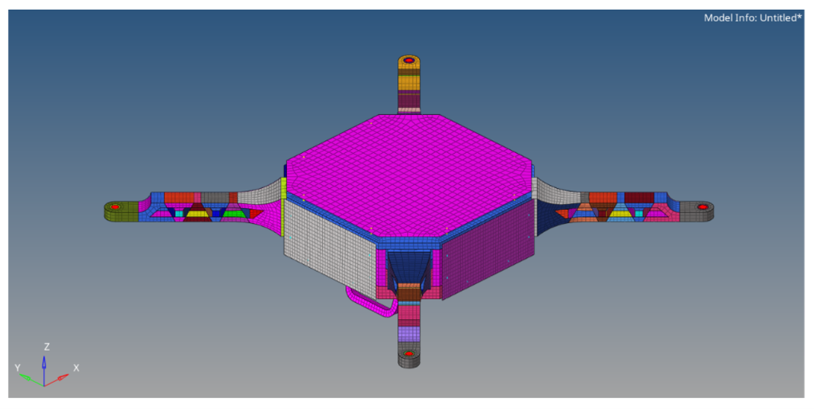
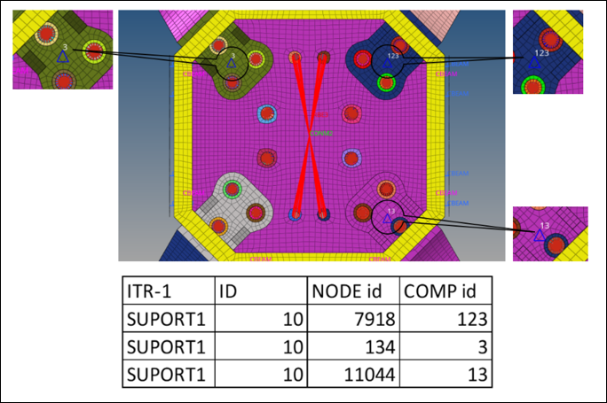
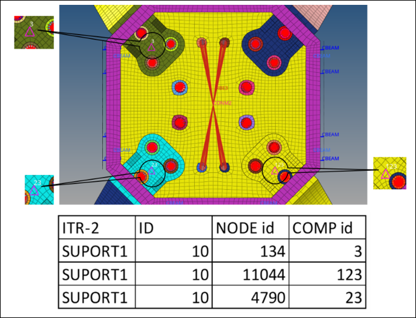
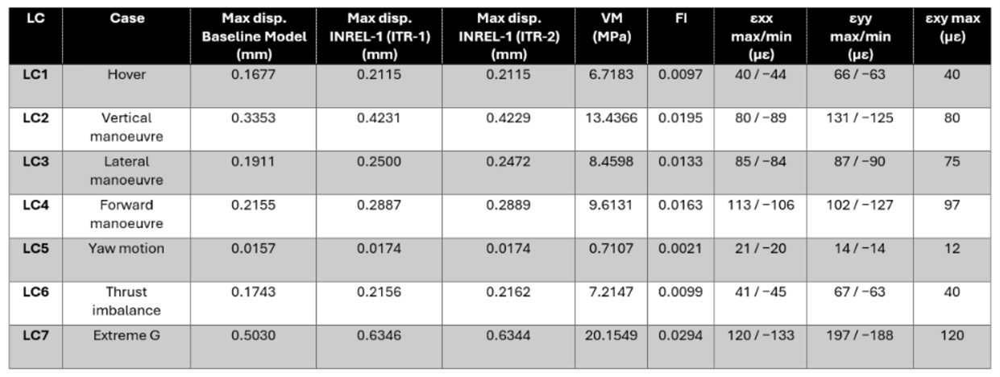

UAV Assembly-Level Structural Assessment
Inertial-relief comparison, elastic normal-mode analysis and linear eigenvalue buckling for a quadrotor UAV assembly. The study compares ITR-1 and ITR-2 static/buckling workflows across seven load cases and includes videos of elastic and buckling mode shapes.

Compare global displacement and internal response
The study compares INREL-2 (ITR-1), used for the SOL 101 static inertial-relief analysis, with INREL-1 (ITR-2), used for the static preload cases feeding the buckling workflow. Reported displacement values differ between the iterations, while the internal von Mises stress, strain and composite failure-index results match.



Elastic Modes — Mode 7 to Mode 20
The first six modes were reported as rigid modes at 0.00 Hz. The elastic mode-shape videos below start at Mode 7 and continue through Mode 20. Mode-shape animations are visualization-scaled eigenvectors; displayed amplitudes are not physical service-load displacements.
| Mode | Frequency (Hz) | Reported mode-shape description |
|---|---|---|
| 7 | 67.32 | Arm bending |
| 8 | 76.27 | Coupled arm bending |
| 9 | 121.23 | Central-body panel deformation |
| 10 | 127.68 | Alternative central-body deformation |
| 11 | 128.31 | Arm-dominated bending |
| 12 | 136.26 | Asymmetric arm deformation |
| 13 | 136.27 | Alternative arm-bending pattern |
| 14 | 171.79 | Internal frame and mounting-region deformation |
| 15 | 259.90 | Central-body panel mode |
| 16 | 367.01 | Landing-gear bending |
| 17 | 380.58 | Alternative landing-gear deformation |
| 18 | 400.77 | Landing-gear and support-frame mode |
| 19 | 412.47 | Coupled enclosure and landing-gear deformation |
| 20 | 431.37 | Central enclosure and support-structure deformation |
Mode 7 · 67.32 Hz
Arm bending
Mode 8 · 76.27 Hz
Coupled arm bending
Mode 9 · 121.23 Hz
Central-body panel deformation
Mode 10 · 127.68 Hz
Alternative central-body deformation
Mode 11 · 128.31 Hz
Arm-dominated bending
Mode 12 · 136.26 Hz
Asymmetric arm deformation
Mode 13 · 136.27 Hz
Alternative arm-bending pattern
Mode 14 · 171.79 Hz
Internal frame and mounting-region deformation
Mode 15 · 259.90 Hz
Central-body panel mode
Mode 16 · 367.01 Hz
Landing-gear bending
Mode 17 · 380.58 Hz
Alternative landing-gear deformation
Mode 18 · 400.77 Hz
Landing-gear and support-frame mode
Mode 19 · 412.47 Hz
Coupled enclosure and landing-gear deformation
Mode 20 · 431.37 Hz
Central enclosure and support-structure deformation
Buckling mode shapes by iteration and load case
Select ITR-1 or ITR-2, then open a load case to view Mode 1, Mode 2 and Mode 3. The supplied report states that the first three buckling factors and mode shapes matched between iterations for all seven load cases.
| Load case | Case | First buckling factor λ₁ | ITR-1 vs ITR-2 |
|---|---|---|---|
| LC-1 | Hover | 130.6727 | Matched |
| LC-2 | Vertical manoeuvre | 65.3363 | Matched |
| LC-3 | Lateral manoeuvre | 124.6914 | Matched |
| LC-4 | Forward manoeuvre | 121.8445 | Reported change: −0.0014% |
| LC-5 | Yaw motion | 1830.5860 | Matched |
| LC-6 | Thrust imbalance | 137.7562 | Matched |
| LC-7 | Extreme G | 43.5576 | Matched |
ITR-1 — Buckling mode shapes for LC-1 to LC-7
LC-1 — Hover | λ₁ = 130.6727
Mode 1
ITR-1 · LC-1 · First buckling mode
Mode 2
ITR-1 · LC-1 · Second buckling mode
Mode 3
ITR-1 · LC-1 · Third buckling mode
LC-2 — Vertical manoeuvre | λ₁ = 65.3363
Mode 1
ITR-1 · LC-2 · First buckling mode
Mode 2
ITR-1 · LC-2 · Second buckling mode
Mode 3
ITR-1 · LC-2 · Third buckling mode
LC-3 — Lateral manoeuvre | λ₁ = 124.6914
Mode 1
ITR-1 · LC-3 · First buckling mode
Mode 2
ITR-1 · LC-3 · Second buckling mode
Mode 3
ITR-1 · LC-3 · Third buckling mode
LC-4 — Forward manoeuvre | λ₁ = 121.8445
Mode 1
ITR-1 · LC-4 · First buckling mode
Mode 2
ITR-1 · LC-4 · Second buckling mode
Mode 3
ITR-1 · LC-4 · Third buckling mode
LC-5 — Yaw motion | λ₁ = 1830.5860
Mode 1
ITR-1 · LC-5 · First buckling mode
Mode 2
ITR-1 · LC-5 · Second buckling mode
Mode 3
ITR-1 · LC-5 · Third buckling mode
LC-6 — Thrust imbalance | λ₁ = 137.7562
Mode 1
ITR-1 · LC-6 · First buckling mode
Mode 2
ITR-1 · LC-6 · Second buckling mode
Mode 3
ITR-1 · LC-6 · Third buckling mode
LC-7 — Extreme G | λ₁ = 43.5576
Mode 1
ITR-1 · LC-7 · First buckling mode
Mode 2
ITR-1 · LC-7 · Second buckling mode
Mode 3
ITR-1 · LC-7 · Third buckling mode
ITR-2 — Buckling mode shapes for LC-1 to LC-7
LC-1 — Hover | λ₁ = 130.6727
Mode 1
ITR-2 · LC-1 · First buckling mode
Mode 2
ITR-2 · LC-1 · Second buckling mode
Mode 3
ITR-2 · LC-1 · Third buckling mode
LC-2 — Vertical manoeuvre | λ₁ = 65.3363
Mode 1
ITR-2 · LC-2 · First buckling mode
Mode 2
ITR-2 · LC-2 · Second buckling mode
Mode 3
ITR-2 · LC-2 · Third buckling mode
LC-3 — Lateral manoeuvre | λ₁ = 124.6914
Mode 1
ITR-2 · LC-3 · First buckling mode
Mode 2
ITR-2 · LC-3 · Secondbuckling mode
Mode 3
ITR-2 · LC-3 · Third buckling mode
LC-4 — Forward manoeuvre | λ₁ = 121.8445
Mode 1
ITR-2 · LC-4 · First buckling mode
Mode 2
ITR-2 · LC-4 · Second buckling mode
Mode 3
ITR-2 · LC-4 · Third buckling mode
LC-5 — Yaw motion | λ₁ = 1830.5860
Mode 1
ITR-2 · LC-5 · First buckling mode
Mode 2
ITR-2 · LC-5 · Second buckling mode
Mode 3
ITR-2 · LC-5 · Third buckling mode
LC-6 — Thrust imbalance | λ₁ = 137.7562
Mode 1
ITR-2 · LC-6 · First buckling mode
Mode 2
ITR-2 · LC-6 · Second buckling mode
Mode 3
ITR-2 · LC-6 · Third buckling mode
LC-7 — Extreme G | λ₁ = 43.5576
Mode 1
ITR-2 · LC-7 · First buckling mode
Mode 2
ITR-2 · LC-7 · Second buckling mode
Mode 3
ITR-2 · LC-7 · Third buckling mode
Governing response — LC7 Extreme G
| Metric | Reported result |
|---|---|
| Project 4 baseline maximum displacement | 0.5030 mm |
| ITR-1 displacement | 0.6346 mm |
| ITR-2 displacement | 0.6344 mm |
| Maximum aluminium von Mises stress | 20.1549 MPa |
| Maximum composite failure index | 0.0294 |
| XX tensile / compressive strain | +120 / −133 µε |
| YY tensile / compressive strain | +197 / −188 µε |
| XY tensile strain | 120 µε |
| First linear-buckling factor, λ₁ | 43.5576 |